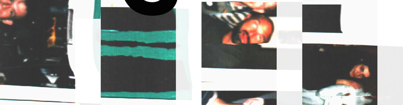

Named after a nightclub in 1930's New York– the first jazz club in NYC to openly allow entry to both black and white customers and treat performers of both races as equals– Cafe Society Valletta is living up to its namesake's legacy as one of the first bars in Malta to be openly LGBTQ+ inclusive, and is paving the way in providing inclusive spaces and creative platforms to an underrepresented community.
With initiatives like Lost Souls Club, Cafe Society is also working to build a community of passionate hospitality professionals, with a goal of cooperation, collaboration, and a joint vision of Valletta's cultural potential and the future of the industry in Malta.
Cafe Society was opened on 1st August 2015 as a passion project for three local DJs who put on music festivals together– Mike Carbone, Alex Zicotron, and Tom Devenish. They wanted to have a permanent venue to play music and throw parties, the universe dropped the opportunity in front of them, and they seized it. They built and ran Cafe Society themselves for three years and grew its reputation for alternative music, social vibes, and simple–but quality–cocktails. The bar gained a loyal customer base of Malta's more open-minded and artistic individuals.
Jake Page joined the team in February 2019 and brought with him over a decade of experience in high-volume cocktail bartending and bar management in venues around the world. He worked with Mike, Tom, & Alex to develop and implement a streamlined and efficient bar system capable of quickly serving consistently quality cocktails to the increasing crowds in the large outdoor seating space on the steps. He hired and trained a bar team in empathetic service and high-caliber hospitality.
COVID threw a wrench in the gears but after entering and then emerging from the refiner's fire of Malta's shutdowns, restrictions, regulations, and lawsuits, Cafe Society returned and reopened better than ever, and continued to grow in popularity.
On 1 May 2022, Jake officially took over Cafe Society as owner, having come to an agreement with his former employers. In essence, they wanted him to put his money where his mouth was, after he decided to permanently fly the LGBTQIA+ flag over St John's Street. Looking back, it was a worthwhile investment– a simple but effective demonstration to Malta of the possibilities of what a safe and inclusive space can be, and how badly we need more of them.
Jake's father in the US handcrafts the iconic Cafe Society aprons from reclaimed denim, and then they are embroidered by local Turkish artist Ebru Cinar. The aprons are awarded to the most trusted senior bartenders– hospitality ninjas who have not only proven themselves behind the bar, but have also mastered the art of creating "Vibe".
Under the direction of a team of these Apron Bartenders, supported by a junior bar staff and a floor staff full of vibrant personalities and creative energy, Cafe Society has made a name for itself– for its authentic, inclusive, and social vibe, world class cocktails, and old fashioned hospitality.